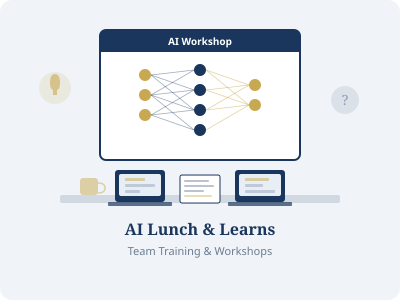
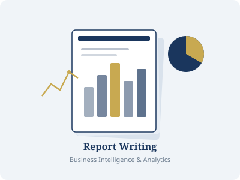
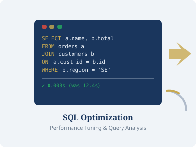
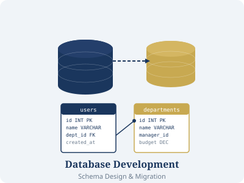
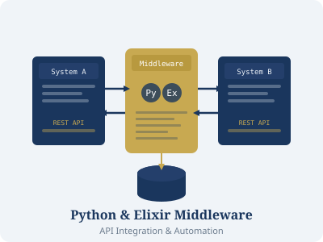

IT Consulting Services
Justin Farr and Business Technology Advantages deliver expert technology solutions to businesses in Auburn, Opelika, Montgomery, Birmingham, Atlanta, and across the Southeast.
IT Consulting
Business Technology Advantages provides strategic IT consulting that aligns your technology investments with your business goals. Justin Farr — a Professor of Practice at Auburn University and former Director of Information and Instructional Technology at Auburn's College of Veterinary Medicine — works directly with leadership teams to assess current infrastructure, identify gaps, and develop actionable technology roadmaps.
With over 20 years of industry experience spanning healthcare, insurance, higher education, and nonprofit sectors, Justin has led IT departments, managed cross-functional teams, and architected solutions at organizations including Blue Cross Blue Shield of Louisiana, the LSU Foundation, and Auburn University. Whether you're in Auburn, Birmingham, or Atlanta, BTA delivers clarity and confidence in your technology decisions.
- Technology infrastructure assessments and audits
- IT strategy and digital transformation roadmaps
- System architecture review and recommendations
- Vendor evaluation and technology selection guidance
- IT department mentoring and capability building
AI Lunch & Learns
Artificial intelligence is transforming every industry — but most teams don't know where to start. Justin Farr delivers engaging, jargon-free AI Lunch & Learn sessions that demystify AI, machine learning, and generative AI for your team. These aren't academic lectures; they're practical, interactive workshops designed to spark real adoption.
Available on-site in Auburn, Opelika, Montgomery, Birmingham, Tuscaloosa, Atlanta, Columbus, and surrounding areas — or delivered remotely for teams anywhere in the country.
- Introduction to AI and machine learning for business leaders
- Generative AI tools: practical applications for your industry
- AI readiness assessments — is your data and team prepared?
- Hands-on prompt engineering and AI workflow workshops
- Custom sessions tailored to your team's experience level
- Executive briefings on AI strategy and competitive positioning

Report Writing
Data is only valuable when it's accessible, understandable, and actionable. Business Technology Advantages builds custom business intelligence reports that turn your raw data into clear visualizations and decision-ready insights. Justin Farr has extensive experience with the tools and platforms that matter most to businesses in Alabama and Georgia.
From automated daily dashboards for operations teams in Opelika to executive KPI reports for C-suites in Atlanta, we design reports that people actually use.
- SQL Server Reporting Services (SSRS) report development
- Power BI dashboard design and deployment
- Crystal Reports development and migration
- Custom report automation and scheduling
- Data visualization best practices and training
- Legacy report modernization and consolidation

SQL Optimization
Slow-running queries cost your business time, money, and patience. Justin Farr is an expert in T-SQL and PL/SQL with hands-on experience tuning queries across Oracle, SQL Server, PostgreSQL, MySQL, and SQLite. Whether it's a single critical query or an entire database layer, BTA delivers measurable speed improvements. Justin's current project work includes deep SQL optimization in Oracle, and a sizable portion of his background is in SQL Server performance tuning.
Using professional tools like Toad, Oracle SQL Developer, SSMS, DBeaver, and SQLGate, Justin diagnoses root causes — not symptoms. Organizations across Auburn, Montgomery, Birmingham, and Atlanta have turned to Business Technology Advantages to rescue underperforming databases and dramatically reduce execution times.
- Query execution plan analysis and optimization
- Index strategy design and implementation
- Stored procedure refactoring and performance tuning
- Database server configuration review
- Deadlock and blocking analysis and resolution
- Ongoing SQL performance monitoring and alerting

Database Development
A well-designed database is the foundation of every reliable application and reporting system. Business Technology Advantages provides end-to-end database development services — from initial schema design through deployment, migration, and ongoing administration. Justin Farr has hands-on experience building and maintaining databases in Oracle, SQL Server, PostgreSQL, MySQL, SQLite, and Azure SQL Database.
Recent projects include a full PL/SQL ETL migration for NN, Inc. — moving data from a legacy Oracle database to a newly normalized architecture while maintaining packages, procedures, functions, and triggers supporting an Oracle APEX interface. Justin also built an Azure SQL Database backend for a Python/Flask financial dashboard at Auburn University, with automated ETL jobs pulling from multiple data sources. Serving businesses in Auburn, Opelika, Lee County, Montgomery, Birmingham, Tuscaloosa, Dothan, Atlanta, Columbus, and surrounding communities.
- Relational database schema design and normalization
- SQL Server, PostgreSQL, MySQL, Oracle, and SQLite development
- Oracle APEX application development and support
- Stored procedures, packages, functions, triggers, and synonyms
- Data migration and ETL pipeline development
- Database version control with Git and deployment automation
- Legacy database modernization and refactoring
- Database security hardening and access control

Python & Elixir Middleware Development
Modern businesses run on interconnected systems — but those systems rarely speak the same language out of the box. Justin Farr builds custom middleware and integration layers that bridge the gap between your applications, databases, APIs, and cloud services. Proficient in Python, Elixir, Flask, C#, ASP.NET, PHP, JavaScript, and jQuery, Justin selects the right tool for each integration challenge.
Recent work includes building an Elixir-based middleware program to integrate two major REST APIs for a veterinary technology platform, as well as a full Python/Flask web application hosted in Azure with GitHub auto-deployment. From API integrations for companies in Birmingham to automated data pipelines for organizations in Atlanta, BTA's middleware solutions are built to be reliable, maintainable, and scalable.
- REST API development and third-party API integration
- Elixir and Python middleware for high-reliability integrations
- System-to-system integration and message brokering
- Scheduled task automation and workflow orchestration
- Data transformation, validation, and cleansing scripts
- Cloud deployment with Azure, Git, and GitHub CI/CD pipelines

How Justin Farr Works
A straightforward, results-focused approach to every engagement.
Discovery
We start with a conversation. Justin learns about your business, your pain points, and your goals — whether you're in Auburn, Atlanta, or anywhere in between.
Analysis
A thorough assessment of your current systems, data, and processes. We identify root causes — not just symptoms — so solutions stick.
Solution Design
A clear, scoped plan with defined deliverables, timelines, and expected outcomes. No surprises, no scope creep.
Implementation
Hands-on execution — from SQL optimization and database builds to Python middleware and AI training. Justin Farr delivers the work, not just the plan.
Need a Custom Technology Solution?
Every business is different. Contact Justin Farr to discuss how Business Technology Advantages can solve your specific challenges — in Auburn, Birmingham, Montgomery, Atlanta, or remotely.
Start a Conversation